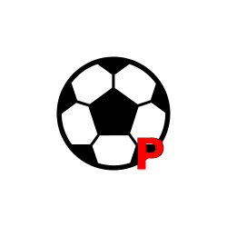

Competitions > UEFA > Champions League > 2002/03 > Final
Juventus 0-0 Milan
2-3
After extra time
Champions League 2003 Final - 19:45 (UTC+1) 28th May 2003
Old Trafford, Manchester - Att: 62,315.
| Trezeguet |  |
| Birindelli | |
| Zalayeta | |
| Montero | |
| Del Piero | |
| Serginho |
| Seedorf |
| Kaladze |
| Nesta |
| Shevchenko |
Juventus
| 1 | GK | Gianluigi Buffon |
| 21 | RB | Lilian Thuram |
| 2 | CB | Ciro Ferrara |
| 5 | CB | Igor Tudor |
| 4 | LB | Paolo Montero |
| 16 | RM | Mauro Camoranesi |
| 3 | CM | Alessio Tacchinardi |
| 26 | CM | Edgar Davids |
| 19 | LM | Gianluca Zambrotta |
| 10 | FW | Alessandro Del Piero |
| 17 | ST | David Trezeguet |
| Substitutes |
| 12 | | Antonio Chimenti |
| 7 | | Gianluca Pessotto |
| 13 | | Mark Iuliano |
| 15 | | Alessandro Birindelli |
| 8 | | Antonio Conte |
| 18 | | Marco Di Vaio |
| 25 | | Marcelo Zalayeta |
| Manager | Marcello Lippi |
| 42' | Birindelli replaces Tudor |
| 46' | Conte replaced Camoranesi |
| 65' | Zalayeta replaced Davids |
Milan
| 12 | GK | Dida |
| 19 | RB | Alessandro Costacurta |
| 13 | CB | Alessandro Nesta |
| 3 | CB | Paolo Maldini |
| 4 | LB | Kakha Kaladze |
| 8 | RM | Gennaro Gattuso |
| 21 | DM | Andrea Pirlo |
| 20 | LM | Clarence Seedorf |
| 10 | AM | Rui Costa |
| 7 | ST | Andriy Shevchenko |
| 9 | ST | Filippo Inzaghi |
| Substitutes |
| 18 | | Christian Abbiati |
| 24 | | Martin Laursen |
| 25 | | Roque Júnior |
| 23 | | Massimo Ambrosini |
| 27 | | Serginho |
| 32 | | Cristian Brocchi |
| 11 | | Rivaldo |
| Manager | Carlo Ancelotti |
| 66' | Roque Júnior replaced Costacurta |
| 71' | Serginho replaced Pirlo |
| 87' | Ambrosini replaced Rui Costa |
Officials
Referee: Markus Merk
Assistant Referee: Christian Schräer
Assistant Referee: Heiner Müller
Fourth Official: Wolfgang Stark